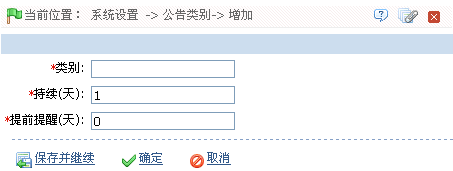

9.4 公告管理
9.4.1 公告类别
系统默认有五种公告类别：消费类、人事类、考勤类、门禁类、系统类。
新增公告类别：
1、单击【系统设置】 【公告类别】
【公告类别】 【新增】，进入新增公告类别页面：
【新增】，进入新增公告类别页面：

类别：输入公告类别名称。
持续（天）：设置该公告类别（的公告）持续显示的天数。
提前提醒（天）：设置该公告类别（的公告）提前提醒的天数。
2、设置完成后，单击【确定】按钮，保存并返回公告类别页面，此时公告类别列表中将显示刚新增的公告类别。
 备注：用户可以在此页面中编辑和删除公告类别，其中系统默认的公告类别只可编辑不可删除。
备注：用户可以在此页面中编辑和删除公告类别，其中系统默认的公告类别只可编辑不可删除。